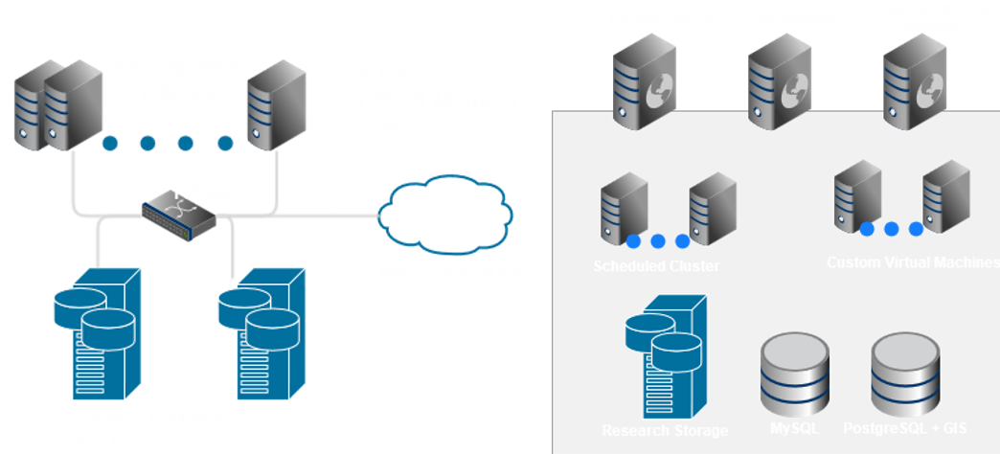

layout: true class: center, middle, inverse --- # SESYNC # Computational Summer Institute # 2015 --- class: inverse layout: false # Welcome! 1. Goals 2. Workshops Mechanics 2. Overview of SESYNC's CI 3. Working in RStudio Server .footer[NATIONAL SOCIO-ENVIRONMENTAL SYNTHESIS CENTER] --- class: inverse layout: false # Goals - Develop and/or progress on the technical aspects of your research project - Understand how various services and tools connect - Know what tools are available for dissemination and preservation of code, data, and results - Know how to formulate questions and get help (from humans and internet) - Apply the knowledge in future projects .footer[NATIONAL SOCIO-ENVIRONMENTAL SYNTHESIS CENTER] --- class: inverse layout: false # Workshop Mechanics - Hands-on, type along, mix of lecture and exercises - Agenda - Sticky notes: red for troubles or questions; green when you're ready; also for assessment - Etherpad: session notes and questions --> sesync.us/csi2015ep --- class: inverse layout: false # SESYNC's CI ## Three types of components - **Data Storage**: file shares and SQL database servers - **Processing Resources**: Virtualization cluster - **Gateways**: RStudio, ssh, files.sesync.org, custom virtual machines  .footer[NATIONAL SOCIO-ENVIRONMENTAL SYNTHESIS CENTER] --- class: inverse layout: false # Working in RStudio Server - RStudio.sesync.org - Access to all storage and processing resources - Integrates version control of code (and other text files) - Navigating data resources: - Home directory ~ - Group data resources /nfs/... .footer[NATIONAL SOCIO-ENVIRONMENTAL SYNTHESIS CENTER] ??? - one stop shop to all our resources - connects to storage (home directory, group data, databases) - run regular R backed by by big memory AND can submit larger jobs to the scheduled cluster - point and click interface to git - Topics and tools we'll cover relevant to other environments (R and many data/programming concepts, script submission, SQL data mngmnt, version control) - Data uploaded through files.sesync available in /nfs/...